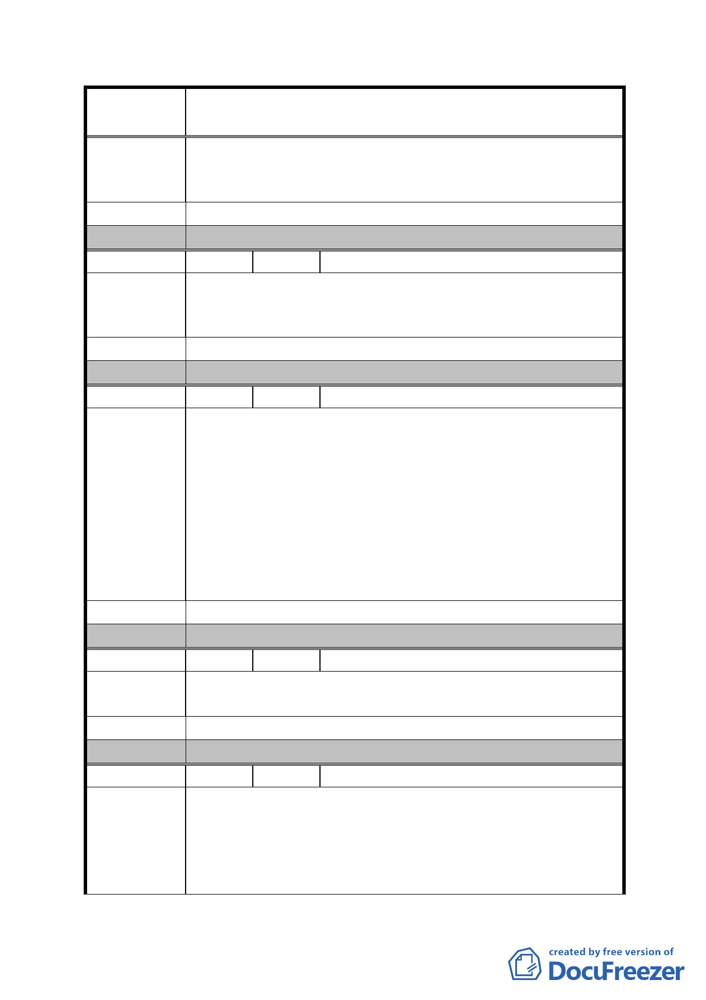

案
名
修訂臺北市「基隆河（中山橋至成美橋段）附近地區土地使
用分區與都市設計管制要點」（北段地區）計畫案
大直金泰段建築容積已屬低密度開發跟信義區相比相對的
低了很多，假如容積放寬規定又被刪減會減少建築造型之彈
性和導致喪失投資人開發意願，不應再降低移入量。
建 議 辦 法 建議維持容積移轉不得超過基準容積之 40％。
委 員 會 決 議 同編號 1。
編 號 22 陳情人 魏雅庵
本人土地座落於中山區金泰段 96-11 號等一筆土地，擬請貴
陳 情 理 由 會於召開本地區都市計畫審議會時，以書面通知本人列席參
加。
建 議 辦 法 （同上）
委 員 會 決 議 同編號 1。
編 號 23 陳情人 陳智華建築師事務所
台北市大直北灣段商業區因受經濟部（006688）方案亦同樣
受到租金收益較少，而開發不利（倒果為因），所以建議政
府開放 3 樓以上可做為商務住宅、一般住宅；且又受到台北
2010 好好看有 10 幾個案申請通過增加容積 1 倍，而祇有宜
陳 情 理 由 華大飯店就增加好幾萬平方公尺商務住宅，造成不公平的競
爭（一般住三 225％，北彎段 160％）比 400％造成不公平
的競爭及價格的破壞，造成住商混合、造成生活品質下降及
各項公共設施負擔不夠，又造成資源的浪費，宜限制住宅容
積數量及上限（如 50％上限）。
建 議 辦 法 （同上）
委 員 會 決 議 同編號 1。
編 號 24 陳情人 楊秀光
陳情理由
全面取消基隆河（中山橋至成美橋段）附近地區之現行都市
設計管制要點規定之高度限制。
建 議 辦 法 （同上）
委 員 會 決 議 同編號 1。
編 號 25 陳情人 宜華國際股份有限公司（98.6.5）
查陳情人宜華國際股份有限公司，為大彎北段地區C2土地之
所有權人，對於貴會於98 年5月19日審議「修訂台北市「基
陳 情 理 由 隆河(中山橋至成美橋段)附近地區土地使用分區與都市設
計管制要點』(北段地區)計畫案」，就台北市政府擬改變97
年1月30日公開展覽內容，所提出建議修正條文，依法提出
- 76 -